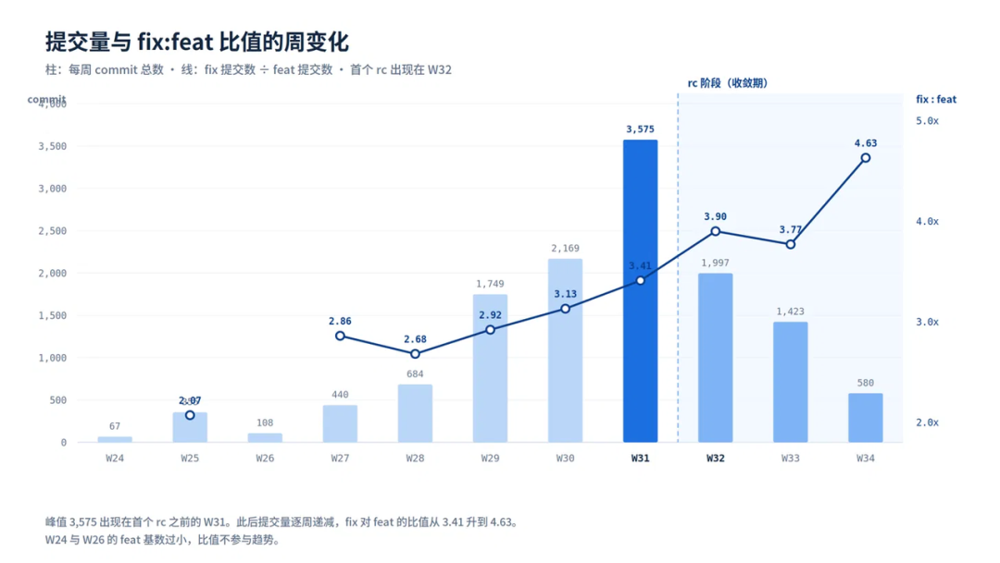
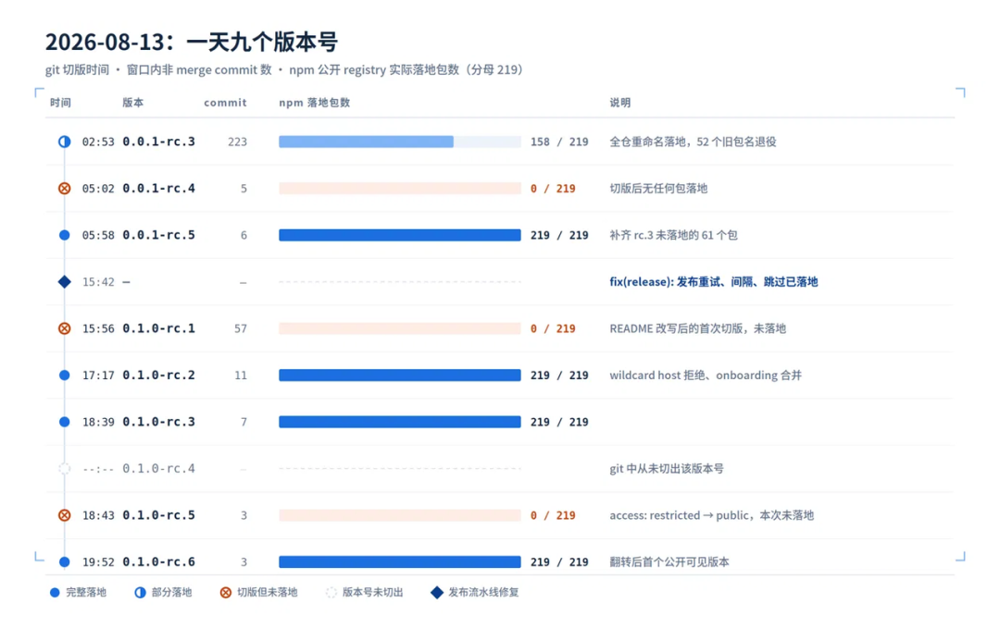
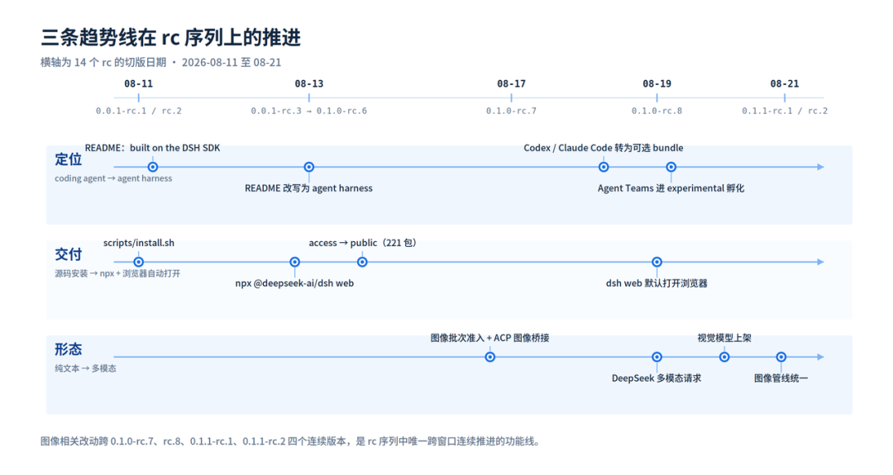

DeepSeek Harness 发布才两周，但翻看它的 Git 历史，会发现它在第一个公开 rc 出现之前，其实就在内部打磨了两个月。
从 0.0.1-rc.1 到 0.1.1-rc.2，这一连串 rc 版本，刚好记录了 dsh 这两周的变化。本文就从版本和源码入手，看看 dsh 是怎么一步步调整产品形态，又如何逐渐划清 Harness 的设计边界。
数据来源

本文的数据来源主要有 2 份记录：一份是 deepseek-ai/deepseek-harness 的完整 Git 历史，另一份是 npm 上 227 个 @deepseek-ai/dsh-* 包的发布记录。分析数据截止到 0.1.1-rc.2，对应仓库里的 b150a551b8。
我们先来看几个数字：
dsh 的首个 commit 出现在 2026 年 6 月 10 日；
到 0.1.1-rc.2，共有 13,147 个 commit、44 位提交者；
仓库采用 packages/<domain>/<package> 的 monorepo 结构，共有 227 个可发布包，另外还有 apps/cli 和 apps/web。
数据来源选择 Git 历史和 npm 也是因为 Git 能看到版本之间具体改了什么，npm 则能看到哪些内容真正发布了出去。两边对照起来，也能补上一些单看版本号看不到的信息。
发版前的两个月

dsh 的第一个 rc 出现在 2026 年 8 月 11 日。这时距离 repo 初始化已经过去了 2 个月，仓库里积累了 214 个包。换句话说，在第一个公开版本号出现之前，dsh 的整体架构其实已经搭得比较完整了。

提交量也能验证这一点。7 月最后一周，也就是 2026-W31，仓库一周就产生了 3,575 个 commit。到了首个 rc 所在的 W32，提交量开始往下走，fix 相对于 feat 的占比则持续上升。
所以，进入 rc 之后，dsh 的开发节奏开始从大规模搭框架，转向把现有能力逐步收紧和整理。不过，这里的“收敛”并不代表架构不再调整。后面的 rc.7、rc.8 里，Provider 解耦、客户端插件化和多模态这些比较大的变化还在继续。
只不过，前一个阶段（未发版）更关心“能力有没有”，到了 rc 阶段，关注点开始转向“这些能力该放在哪一层、应该怎么命名、如何被安装，以及哪些东西适合进入稳定核心”。
残留的内测痕迹

0.0.1-rc.1 还带着很明显的内测痕迹。README 当时把 dsh 描述成：
an open-source coding agent built on the DeepSeek Harness SDK
安装方式也比较“开发版”：需要先 clone 仓库，再运行 scripts/install.sh。安装器会检查 Git 和 Node 环境、安装 pnpm、提示输入 DeepSeek API Key，然后完成构建并启动 Web UI。当前使用的 checkout 会保存在 ~/.dsh/source/current，后续更新时再重新跑一遍安装器。
遥测策略也很有内测味道。完整的 Session Log 默认会上传，用来排查问题；如果不想上传，需要手动设置 DSH_TELEMETRY_DISABLED=1。反馈渠道则放在内部微信群。整体看下来，这一阶段的 dsh 还更像一套面向内部测试的开发版本，安装、更新和反馈流程都带着比较强的团队控制色彩。
从 rc.1 到 rc.2，仓库一共产生了 334 个非 merge commit，其中 42 个 feat、142 个 fix。SDK 也做了一轮整理：原来的 scaffold/ 七个包整体退出，收敛成 sdk/protocol、sdk/client 和 sdk/server 三个包。
与此同时，Harness 运行时需要的一些基础能力也在补齐，包括 Schedule、后台 Subagent、Message Feedback 持久化、Session Log 导出，以及 MCP Client 的自动重连。这个阶段还没有明显改动产品定位，重点更多放在把公开版本所需的基础能力补完整。
命名契约

0.0.1-rc.3 是一个很有意思的版本。
只看包数量的变化，你会发现这个版本新增了 70 个包路径，同时移除了 60 个，很容易让人以为 dsh 做了一次大规模架构调整。但把这些变化逐个对下来，会发现其中相当一部分其实是在重新命名。
dsh 还专门为这次改名留了一份设计注记。里面提到的问题很典型：随着仓库越来越大，一些早期名称开始和实际能力对不上。比如，有些包名沿用了最初实现的名字；有些类统一叫 Service，实际承担的却可能是 Registry、Runtime、Engine、Controller 或 Resolver；还有些 Provider 叫 local，但它们依赖的是可替换的 ctx.fs 和 ctx.subprocess，本身并不绑定某个本地执行环境。
于是到了 rc.3，dsh 索性做了一次全仓范围的命名整理：
包一级也有不少类似的调整。比如，dsh-lsp-local 改成 dsh-lsp-stdio，因为这个 Provider 实际依赖的是 stdio；dsh-agent-tool-mode 改成 dsh-agent-tool-presentation，更准确地说明它改变的是工具如何呈现给模型；dsh-workspace-context 则改成 dsh-agent-instructions，因为这个包实际负责加载分层的 AGENTS.md 和 CLAUDE.md。
而且，这次改名并没有只改目录名。npm 包名、import、Cordis 插件名、ctx key、公开类型、事件、工具标识符、配置、测试、fixture 和文档都一起切了过去，也没有保留 alias、兼容包、双事件名或 fallback 解析器。
dsh 在这个阶段做的，其实是在公开之前重新整理一遍自己的能力命名。
对于 Harness 来说，这些名字后面很可能会进入插件接口、配置和第三方扩展。一旦外部开始依赖，后面再改的成本就会越来越高。所以 dsh 选择趁 pre-release 阶段，把那些更贴近“当前实现”的名字，改成更能描述“这项能力本身”的名字。
这次调整看起来主要是改名，但背后其实是在重新划分和确认 Harness 的能力边界。
密集切版

2026 年 8 月 13 日，dsh 正式转向公开发布，这也让当天的版本更新变得格外密集。从 0.0.1-rc.3 到 0.1.0-rc.6，这一串版本基本都挤在同一天里。期间有几个版本虽然完成了 Git 切版，却没有出现在公开的 npm Registry；0.0.1-rc.3 也只发布了 219 个包中的 158 个。

一方面，这是项目从内部开发走向公开分发后，版本和包发布集中发生变化；另一方面，200 多个包连续发布，也很快暴露出早期流水线的问题。当时一旦发布中途失败，就会留下部分包成功、部分包失败的状态；重新执行时，前面成功发布的包又会返回 409。随后 dsh 补上了 publication retry、发布间隔和跳过已落地包等机制。
同一天，221 个包的 publishConfig.access 也从 restricted 改成 public。这一变化让此前以 restricted 方式发布的早期版本一起出现在公开 npm 历史中。所以今天回头看 npm 时间线，会发现一些包的发布时间早于 dsh 的公开发布节点，这也是这段版本历史里比较容易让人困惑的地方。
定位改写

8 月 13 日前后，dsh 从内部测试走向公开发布，也在这个节点上重新调整了自己的产品定位。README 里的介绍，从：
an open-source coding agent built on the DeepSeek Harness SDK
改成：
an open-source agent harness developed by DeepSeek AI
从 Coding Agent 到 Agent Harness，看起来只是几个词的变化，背后的关注点其实变了。前者更接近一个具体的 Coding Agent，负责完成代码任务、调用工具、维护 Session 和提供交互体验；后者更关注底层运行时和扩展机制，比如模型怎么接入、工具怎么注册、Session 怎么保存、Agent Loop 怎么运行，以及不同 Provider 和插件怎么组合起来。
也是在这次更新里，README 加入了 Cordis 的来源，以及与时空可组合性相关的论文链接。
同一时期，dsh 的公开方式也在变化。8 月 10 日，scripts/install.sh 被删除；8 月 12 日，README 把 Web UI 设为主要入口，启动方式简化成：
npx @deepseek-ai/dsh webInternal Testing Notice 也换成 Developer Preview，社区渠道从内部微信群转向 GitHub Discussions、Discord 和 dsh-plugin topic，遥测则改成显式 opt-in。
把这些变化放在一起看，dsh 开始从一套内部运行的 Coding Agent，走向一个面向开发者开放、可扩展和可组合的 Agent Harness。
核心与扩展

0.1.0-rc.7 和 rc.8，是整个 rc 序列里变化比较集中的两个版本。
rc.7 开始支持 DeepSeek 的 Low Reasoning Effort，同时补上图片批次准入和 ACP 图像桥接；Settings 也从固定表单，转向按插件注册的 Namespace 动态生成。到了 rc.8，这些变化又往前走了一步。
先看 Web UI。CLI 会在服务真正 Ready 之后自动打开浏览器，同时处理 SSH、环境变量传递和子进程凭证隔离等问题。这里关注的已经不只是“网页能不能打开”，还包括 Harness 启动完成之后，怎么把用户更安全地交给上层界面。
多模态链路也在这两个版本里逐渐补齐。rc.7 加入图像批次准入和 ACP 图像桥接，rc.8 再加入 DeepSeek 多模态请求，图片从附件进入 Harness，再到模型请求的整条链路开始连起来。
更值得关注的是外部 Agent 的处理方式。Codex 和 Claude Code 原先作为内建依赖存在，rc.8 把它们拆成两个可以单独安装的 Bundle，同时从生产构建的内建依赖中移除。例如 Codex Provider 可以单独安装：
dsh plugin --profile <n> add @deepseek-ai/dsh-subagent-codex这也意味着，dsh 又重新划了一次“什么该留在核心里”的边界。Harness 负责提供稳定的 Subagent 能力和生命周期，至于具体启用哪个 Provider，则交给 Profile 和 Bundle 来决定。这样一来，后面新增 Provider 时，也不用继续往核心 Runtime 里塞。
同一个版本里，Agent Teams 被放进了 packages/experimental/。这不只是目录上的分类，背后还有一套明确约束：Experimental 包不会进入正式的 pack/publish 集合，稳定 Release 包和应用也不能依赖它。像 Child Identity、Continuable Subagent 这类更通用的能力会留在稳定层，Agent Team 再建立在这些能力之上。
这样一来，dsh 的依赖方向也变得更清楚了：稳定能力可以被实验功能调用，但实验功能不能反过来侵入稳定核心。
客户端这边也在做类似的拆分。Web Rendering 被移到 Dynamic Plugin，React Bindings 合并进 UI Renderer，Attachment UI 也改成 Client Plugin；设置页面则开始从统一的 Describe Mirror 动态生成。
到这里，“一切皆插件”已经从模型、工具和 Runtime，继续延伸到了客户端。
从 API Key 到 OAuth

到了 0.1.1-rc.1，dsh 开始补另一个很典型的 Harness 能力：凭证管理。
早期的 Credential（凭证）模型主要围绕 API Key 设计。CredentialRef 本质上指向一个环境变量名，再按照进程环境、托管文件和 .env 的顺序去取值。用来处理 API Key 没什么问题，但到了 OAuth 场景，这套方式就显得不够用了。
OAuth 的流程要复杂得多：用户需要打开授权页面、登录账号、返回 Code，最后拿到一份包含 Access Token 和 Refresh 信息的凭证记录，后续 Token 还可能继续刷新和轮转。
到了这一步，凭证管理显然不能只围绕一个字符串来做。
0.1.1-rc.1 因此连续补了三块能力：Credential Record 用来持久保存完整凭证；Authorization Flow 负责在需要时向用户发起授权；Provider 则可以通过 Sign-in 获得凭证。此前因为只支持 OAuth 而无法工作的 Provider，也因此能够重新进入模型目录。
这一变化看起来离 Agent Loop 有点远，却很能说明 Harness 正在向更完整的 Runtime 扩展：它不只负责调用模型，还得承载 Provider 从配置、授权到凭证轮转的一整套生命周期。
多模态链路

0.1.1-rc.1 同期把 DeepSeek Vision Model 加入模型列表。到了 rc.2，这一版只有 4 条 feat，几乎都围绕图像能力做收口：Master 和 Files 的请求路径被合并，本地附件存储开始使用确定性的规范图像编码，read_image 会把缩放后的尺寸和坐标比例返回给模型，此前的区域读取接口也被移除。
如果把整个 rc 序列连起来看，会发现图像能力一直在持续补齐。rc.7 先解决图片怎么进入 Harness，rc.8 再接上 DeepSeek 的多模态请求，0.1.1-rc.1 把视觉模型加入模型目录，rc.2 则进一步统一图像请求和存储链路。
这也能看出，多模态接入 Harness 之后，改动会同时涉及附件、协议、模型请求、文件工具、存储和客户端展示。Harness 需要把这些环节串起来，让图片能够从输入一路流到模型和上层应用。
三条产品演进线

如果把这段 rc 序列重新拉直，dsh 的产品演进大致可以看到三条线。

第一条是产品定位。dsh 最开始还是一个基于 Harness SDK 构建的 Coding Agent，后来逐渐把自己定义成 Agent Harness。随着定位变化，Codex、Claude Code 这类具体 Provider 被拆出核心，Agent Teams 留在实验层，设置页和客户端也开始更多依赖插件动态生成。
dsh 的重心也随之发生变化：相比提供一种固定的 Agent 形态，它开始更关注这些能力该怎么注册、组合、替换和扩展。
第二条是分发方式。从 clone 仓库、运行 install.sh，到一条 npx @deepseek-ai/dsh web；从内部微信群，到 GitHub Discussions、Discord 和插件 Topic；npm 包从 Restricted 改成 Public，遥测也从默认开启变成显式选择。
这条变化其实很清楚：dsh 正在从内部测试项目，走向一个公开的 Developer Preview。
第三条是能力边界。早期更多是在补 Schedule、Subagent、MCP 和 Session 这些 Harness 基础能力；到了 rc.3，开始重新整理这些能力该叫什么；rc.7、rc.8 又进一步划分 Core、Provider、Experimental 和 Client Plugin 之间的边界；到了 0.1.1，Credential 和多模态这类跨层能力也被逐步纳入 Runtime。
版本一直在往前走，但背后有一件事没怎么变：dsh 一直在反复确认，哪些能力应该进入 Harness 核心，哪些更适合留在扩展层。
产品背后的设计取舍
如果想继续往下看 dsh 为什么会做这些调整，仓库里的 .agents/notes/ 很值得翻一翻。这里集中保存了不少设计记录，并按照 implemented、archived、proposed 和 rejected 分成四类。
截至分析时，里面有 559 篇已实现记录、143 篇已归档记录、26 篇提议记录，以及 11 篇被拒绝的方案。每份记录都会把问题是什么、最后怎么决定、考虑过哪些方案，以及这个决定会带来什么影响写清楚。仅 8 月 11 日到 8 月 21 日这一段 rc 期间，就留下了 95 篇注记，涉及 Bug Fix、Feature、架构、流程、简化和测试等不同类型。
相比 commit message，这些注记更容易看出一次变化背后的原因。比如，rc.3 为什么要做全仓重命名、为什么不保留 Alias；Agent Teams 为什么放进实验性功能；Web UI 为什么要等所有加载流程跑完后再打开浏览器；OAuth 凭证为什么要从简单的 CredentialRef 扩展成 Credential Record。
被拒绝的目录下也很多有意思的内容。这里保留了一些团队认真讨论过、最后没有采用的方案，包括 Workflow 合并、Skill Registry API 裁剪、Compaction 包合并和依赖替换等。
把这些做过的选择和最后放弃的方案放在一起看，会更容易理解 dsh 在 Developer Preview 阶段是怎么一点点形成自己的设计取向的。
结语

从 6 月 10 日的第一个 commit，到 8 月下旬的 0.1.1-rc.2，dsh 用两个多月不断调整自己的产品形态和能力边界。进入 rc 之后，这种变化变得更集中：命名被重新整理，具体 Provider 被拆出核心，实验能力被隔离，客户端继续插件化，OAuth 和多模态也开始进入 Runtime。
把这一串版本连起来看，真正值得关注的，是 dsh 如何不断回答同一个问题：一项新能力应该放在哪一层，又该和核心保持怎样的关系。
这也是 DeepSeek Harness 这段版本演进里，最值得看的地方。
相关推荐：
拆解 DeepSeek Harness：Profile 与 Bundle 如何装配运行时